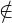
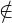

Sea x∈Bc por definición de complemento x B.
B.
Por otra parte, si suponemos que x∈A por hipótesis entonces x∈B, lo que nos lleva a un absurdo pues
xB, entonces debe ser que xA de tal manera;
si x∈ Bc ⇒ x∈ Ac
∴ Bc ⊆ Ac
Propiedad de conjuntos:
Sean A, B conjunos entonces A ⊆ B ⇔ Bc ⊆ Ac
Dem.
⇒⌋
Sea x∈Bc por definición de complemento xB.
Por otra parte, si suponemos que x∈A por hipótesis entonces x∈B, lo que nos lleva a un absurdo pues
xB, entonces debe ser que xA de tal manera;
si x∈ Bc ⇒ x∈ Ac
∴ Bc ⊆ Ac
⇐⌋
Esta parte lo demostraremos por deduccción al absurdo, por lo que supondremos que Bc ⊆ Ac & A⊈B
entonces
Sea x∈A ⇒ x∈B
Pero si x∈B entonces x∈Bc y por hipótesis x∈Ac
∴ x∈A & x∈Ac !
Como suponer que A⊈B nos llevó a un absurdo debe ser que
A⊆B
■